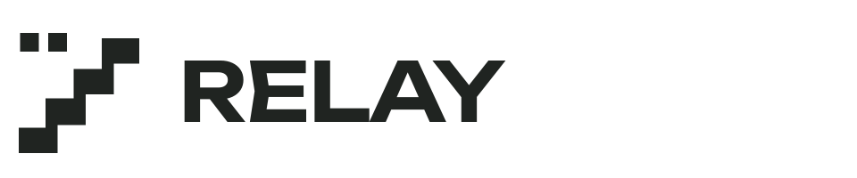
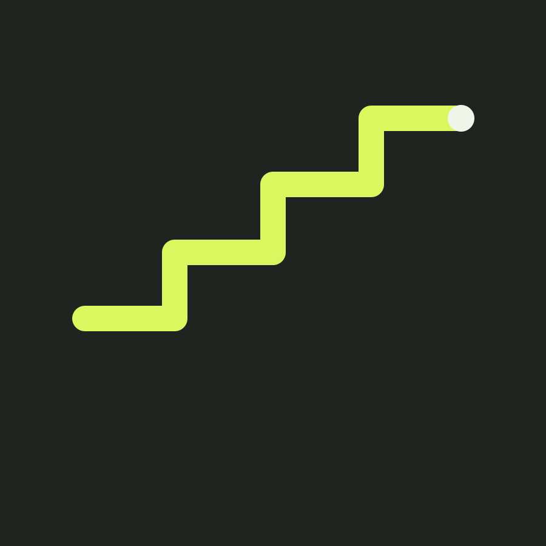
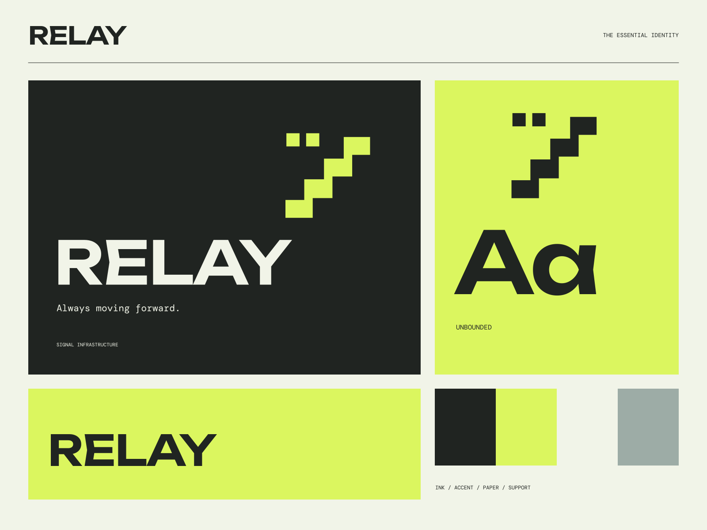

01
Always in sync
A clear foundation for information that keeps moving.

REAL-TIME TOOLS / OPEN SIGNAL
Always moving forward. Connect. Build. Keep moving.

A coherent little world
Connect. Build. Keep moving. Always moving forward.
01
A clear foundation for information that keeps moving.
02
Technical detail organized around the job you need to do.
03
Purposeful tools, legible interfaces, and fewer unnecessary steps.

The point of view
Oscilloscope ribbons, precise terminal frames, numbered modules, and sharply electric signal color. A technical world with unmistakable speed and editorial discipline.